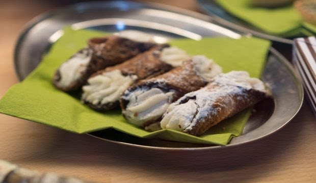

La masa con la que se elaboran los cannoli es distinta a otras conocidas,
entre otras cosas porque se hace con el vino Marsala, de origen italiano.
Este vino dulce, utilizado para postres y también para aperitivos, otorga a
la masa un aroma y sabor diferente, sobre todo si está mezclada con queso y
ralladura de naranja.
Este increíble postre es capaz de soportar variadas combinaciones,
por lo que se puede encontrar en todas partes del mundo con diferentes rellenos,
todos ellos exquisitos y dignos de ser degustados.
Para la elaboración de los cannoli serán necesarios unos utensilios de acero
inoxidable, que aportarán la forma característica, o moldes de tipo canutillo.
Receta de Cannoli Sicilianos

Ingredientes:
Para la masa:
250 gramos de harina
2 cucharadas de azúcar
1 cucharada de cacao de calidad, en polvo
Una pizca de sal
Media cucharadita de canela
Media taza (125 mL) de vino Marsala
1 huevo
Aceite de girasol o de soja para freír
Para el relleno:
500 gr. de queso ricotta
150 gramos de azúcar glas
Media cucharadita de canela molida
1/2 cucharadita de extracto de vainilla
Media cucharadita de ralladura de naranja
Elaboración:
El primer paso es pasar el queso ricotta a un cedazo o colador, y
colocarlo sobre un recipiente para que pierda el exceso de líquido. Se
puede tener de esa forma durante unas horas.
En un bol con suficiente capacidad se ponen todos los ingredientes secos,
mezclándolos bien, incorporando el huevo y poco a poco el vino
Hay que conseguir una masa con el toque justo de suavidad y elasticidad,
por lo que se amasará bien.
Una vez amasada, se cubre la pelota con papel film y se deja reposar
durante una hora en la nevera.
Sacar la masa y estirar con la ayuda de un rodillo.
Se cortan piezas circulares y se enrollan sobre los tubos de cannoli.
Para pegar, bastará un punto de agua o huevo batido.
Se fríen hasta estar bien dorados y se colocan sobre papel absorbente.
La elaboración de la crema es sencilla, bastará con mezclar de forma
homogénea todos los ingredientes y pasarlos a una manga pastelera, rellenando
los cannoli una vez fríos.
La decoración puede ser con azúcar glass o chips de chocolate.